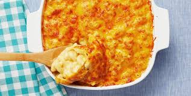

Mac and Cheese

Description
This recipe is a simple, yet amazing guide to making your best mac and cheese ever! Make sure you have all of the ingredients and follow the steps as best you can. The recipe is easy for any occasion and you can customize it in the future after you have become a professional, haha I hope you can at least get better.
This recipe utilizes certain cheese but it can be swapped out to your liking. Just follow the same amounts and it should be relatively the same. (NOTE: Some cheese is stronger tasting than others so if you are worried about that then you can go a bit less in that department)
Ingredients
- 1 Block Sharp Cheddar (SHRED IT)
- 1 Box Elbow Macaroni of your liking
- Butter (If salted butter use less salt)
- Flour (All-Purpose should work)
- Salt
- Black Pepper (Ground preferred)
- Milk
- Half and half
Steps
- **OPTIONAL BUT RECOMMENDED Preheat oven to 325: Lightly grease a square baking pan, too.
- Cook the macaroni: slightly undercook your noodles! Drain and set aside.
- Make the roux: Melt butter in medium size saucepan over medium heat. Blend in flour, salt, and pepper. Cook 2 minutes.
- Add milk and cheese: Stir in the milk and half and half and stir slowly and constantly. **Remove from heat**. Add 1 cup of the shredded cheese and stir until melted. Add cooked macaroni and toss them around to coat them fully.
- **OPTIONAL BUT RECOMMENDED Pour into baking dish: Half pasta into dish. Then sprinkle with more cheese. Then top with other half and sprinkle with more cheese. Bake until browning on top.